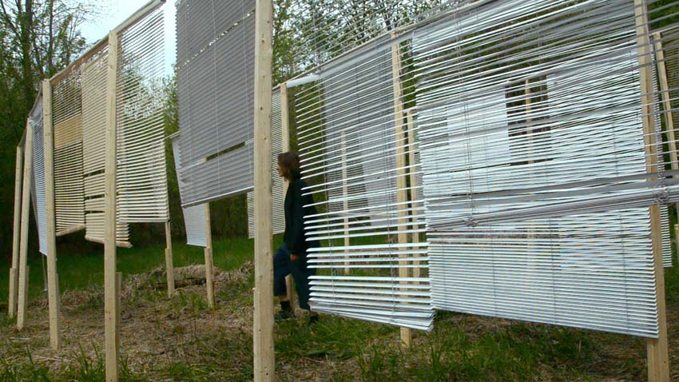

Jessica Arseneau
Stratas
2015
Installation temporaire dans un terrain vague
Laval, banlieue de Montréal, QC




L'installation est principalement conçue de stores de maisons et de bois de construction. Le positionnement des pièces de bois forme la structure de base qui, avec la profondeur et la perspective, évoque une sorte d'architecture. L'intention est de déplacer les stores à l'extérieur où il ne divise plus d'espaces. En apportant cet objet qui divise normalement l'espace privé et public, ici, cette construction ouverte brouille les frontières d’un imaginaire individuel et social en évoquant au passage une ambiguïté entre l'intérieur et l'extérieur (par exemple: d'un corps, d'un bâtiment, d'un territoire).
Alors que le vent souffle dans les lattes, les stores font une chorégraphie d'où émerge une poésie.